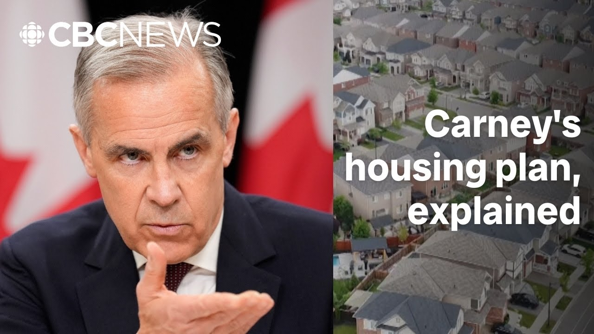

【卡尼计划如何建造更多住房？】
Summary: Prime Minister Mark Carney has a plan to make housing more affordable in Canada by cutting GST for some buyers, reducing development charges, government-led construction, and incentivizing apartment building, though its effectiveness is debated.
摘要： 加拿大总理马克·卡尼计划通过为部分购房者减免消费税、降低开发费用、政府主导建设以及鼓励公寓建设来提高住房 affordability，但其效果存在争议。

⏱️ Estimated Reading Time: 5 min
Prime Minister Mark Carney says he has a plan to make housing more affordable in Canada.
加拿大总理马克·卡尼表示，他有一个让加拿大住房更 affordable 的计划。
But what does that plan actually look like?
但这个计划具体是什么样子的呢？
We have to build.
我们必须建造。
We will address failures in the housing market head on.
我们将直面住房市场的失败。
There are four big planks.
有四大支柱。
Cut the GST for some buyers, cut development charges, the fees builders pay to cities, get the government itself building houses, and make it cheaper for investors to build apartments.
为部分购房者减免消费税，降低开发商支付给城市的开发费用，让政府亲自建房，并降低投资者建造公寓的成本。
But there's a lot of argument about how or if this would all work.
但关于这些措施是否有效或如何运作存在很多争论。
Let's start with the GST.
让我们从消费税开始。
First-time home buyers won't pay that on brand new homes under a million dollar.
首次购房者购买价格低于百万的新房时无需支付消费税。
That could save them up to $50,000.
这可以为他们节省高达5万加元。
But a key point here, the GST doesn't usually apply to buying existing residential homes.
但关键一点是，消费税通常不适用于购买现有住宅。
Carney claims this tax break will spur construction and boost supply, but this expert is skeptical.
卡尼声称这一税收优惠将刺激建设并增加供应，但这位专家持怀疑态度。
First-time home buyer programs, which are demand side programs, they don't create any more housing.
首次购房者计划是需求侧计划，它们不会创造更多住房。
They generally suck.
它们通常很糟糕。
They generally don't work.
它们通常不起作用。
Developers and homebuilders though, they love the GST idea.
然而，开发商和建筑商喜欢消费税的想法。
They also love being charged less in general, which is another one of Carney's plans.
他们也喜欢总体上支付更少的费用，这是卡尼的另一项计划。
So, development charges are the fees that are placed on a new community, a new development that are paid by the developer for infrastructure and other areas that facilitate growth.
开发费用是开发商为促进增长的基础设施和其他领域支付给新社区或新开发项目的费用。
Those fees are passed along, as many other taxes are, to the new home buyer.
这些费用像许多其他税一样，会转嫁给新房买家。
So developers say a 50% cut in those charges would make it cheaper to build.
因此，开发商表示，将这些费用削减50%将降低建设成本。
But the federal government doesn't directly charge those fees.
但联邦政府并不直接收取这些费用。
It's often municipalities.
通常是市政当局收取。
The only thing the federal government can do is influence them.
联邦政府唯一能做的就是影响它们。
Come up with agreements with municipalities to say, "Hey, if you lower development charges, if you change some of your processes, we will compensate you for that."
与市政当局达成协议，说：“嘿，如果你们降低开发费用，改变一些流程，我们会补偿你们。”
I don't think that they've put up enough money to get municipalities to actually change.
我认为他们没有提供足够的资金来让市政当局真正改变。
But what the feds can do directly is build stuff.
但联邦政府可以直接做的是建造房屋。
They even plan to use public land.
他们甚至计划使用公共土地。
But what can they build?
但他们能建造什么呢？
The federal government doesn't have that amount of land where it can create simple 900 ft single detached homes.
联邦政府没有足够的土地来建造简单的900平方英尺独立屋。
What they're going to have to build is more missing middle type homes.
他们将不得不建造更多“缺失的中型”住房。
So fourplexes, sixplexes, three-story apartment buildings.
比如四联排、六联排、三层公寓楼。
As for the people building houses right now, they say the government doesn't need to build.
至于目前正在建房的人，他们认为政府不需要建房。
It just needs to lower fees, make approvals faster, and let the market do it.
只需要降低费用，加快审批，让市场来做。
Not so fast, say human rights and housing advocates.
人权和住房倡导者表示，别这么快。
When you rely too heavily on the private sector in the housing sphere, you lose accountability.
当你过于依赖私营部门来解决住房问题时，就会失去问责制。
The Liberals say they want to combine public and private sectors, but the private sector is a big part of this plan.
自由党表示他们希望结合公共和私营部门，但私营部门是这个计划的重要组成部分。
That includes a tax change to encourage building new stuff.
这包括一项鼓励建造新房的税收改革。
We want you to use your money to actually create new rental housing, not just buy up existing units.
我们希望你们用你们的钱来真正创造新的租赁住房，而不仅仅是购买现有单元。
And if you do so, you're able to deduct certain expenses from the building and operating of those buildings against your personal income taxes.
如果这样做，你们可以从这些建筑的建造和运营中扣除某些费用，以减少个人所得税。
Advocates say, "Sounds great as long as somebody keeps a strict eye on things."
倡导者表示：“只要有人严格监督，听起来很棒。”
It is government's role to hold the private sector accountable.
政府的职责是让私营部门承担责任。
And accountable to what?
对什么负责？
Accountable to the human right to housing.
对住房人权的责任。
Accountable to genuine affordability.
对真正 affordability 的责任。
As for whether all of this will work, lots of opinions out there.
至于这一切是否会奏效，众说纷纭。